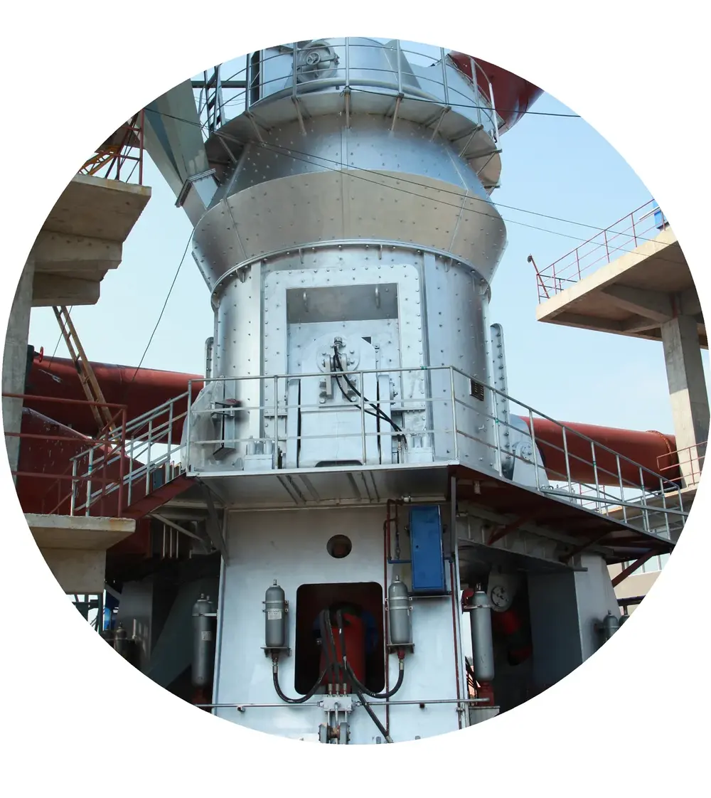

| Models | Wear Parts |
|---|---|
| Models | LM 12.2 to LM 43.4 |
| Wear Parts | Roller sleeves, Grinding tables, Nozzle rings |
Manufactured from premium wear-resistant alloys including high-manganese steel, Cr-Mo alloy steel, and high-chrome cast iron.
LM 12.2 to LM 43.4
Roller sleeves, Grinding tables, Nozzle rings
Grinding roller surface for Loesche LM coal mills; 2+2 or 3+3 roller configuration; hardfacing or Cr26 cast options
| Grade | C | Cr | Nb | W | Fe |
|---|---|---|---|---|---|
| Hardfacing Overlay (Cr-C) | 3.0-5.5 | 20.0-35.0 | 4.0-8.0 | 0-10.0 | Balance |
Weld overlay on cast steel base; can be re-welded 3-5 times for extended service life; cost-effective for VRM rollers and HPGR cheek plates
| Grade | C | Si | Mn | Cr | Mo | Ni |
|---|---|---|---|---|---|---|
| Cr26 | 2.0-3.3 | ≤1.0 | 0.5-1.5 | 23.0-30.0 | 1.0-3.0 | ≤1.5 |
Excellent abrasion resistance with M7C3 carbide network; 3-5x longer life than Mn steel in pure abrasive wear; ideal for vertical mill rollers and VSI rotors
Loesche coal mill rotating classifier vanes; adjustable for precise fineness control
| Grade | C | Si | Mn | Cr | Mo |
|---|---|---|---|---|---|
| Cr20 | 2.0-3.3 | ≤1.2 | ≤1.5 | 18.0-23.0 | ≤3.0 |
High hardness with moderate toughness; excellent for impact-crusher blow bars and hammer tips
| Grade | C | Si | Mn | Cr | Mo |
|---|---|---|---|---|---|
| Cr26 | 2.0-3.3 | ≤1.2 | ≤1.5 | 23.0-30.0 | ≤2.0 |
Highest hardness for abrasive wear; best for fine crushing and grinding applications with low impact